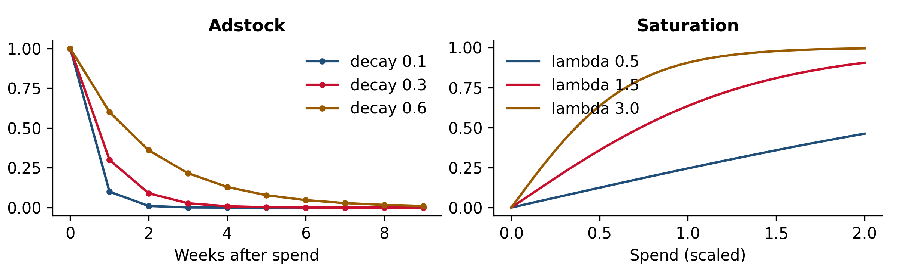
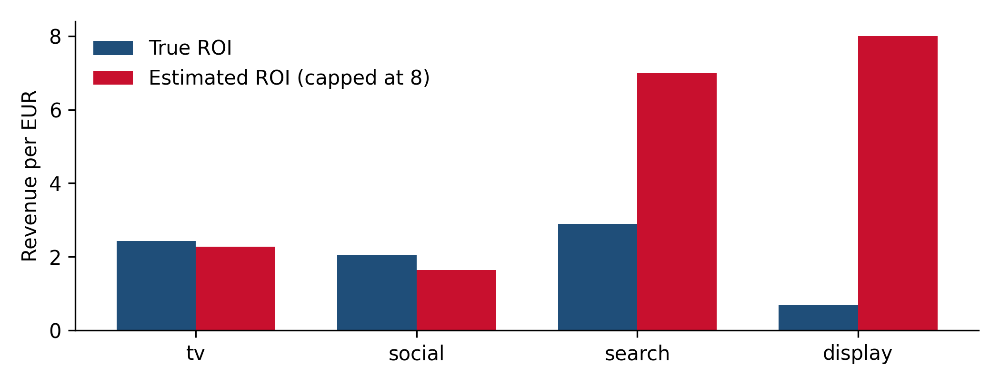

Chapter 9 Marketing mix modeling end to end
How much each channel contributes to the business outcome and at what return, as the basis for setting the total budget and splitting it across channels. This chapter builds a classical MMM from scratch so that every moving part is visible, and shows where it fails.
9.1 What an MMM is, and what it is not
A marketing mix model is a time-series regression of a business outcome (revenue, sign-ups, accounts) on media activity and everything else that drives the outcome: trend, seasonality, prices, promotions, macro conditions. Its output is a decomposition of the outcome into a base and a contribution per channel, from which you get return on spend, response curves and budget scenarios.
Its strengths follow from working with aggregates. It needs no user-level tracking, so it is unaffected by signal loss (Chapter 2). It covers every channel, online and offline, in one consistent framework. And it naturally produces the marginal returns that allocation decisions need.
Its weaknesses follow from being observational. It learns only from variation in spend that already happened, so a channel whose spend never moved cannot be measured, and a channel whose spend moves with demand will be credited with that demand (Chapter 3). An MMM is a causal claim made with regression, and it is only as good as its assumptions. That is why Chapter 11 is about validating and calibrating it against experiments.
9.2 The building blocks
Most MMMs, from a spreadsheet to Google’s Meridian, share the same structure:
\[ y_t = \text{base}_t + \sum_{c} \beta_c \, f_c\!\left(\text{adstock}_c(x_{c,t})\right) + \varepsilon_t, \]
where \(x_{c,t}\) is spend (or impressions) in channel \(c\) in week \(t\), and the base contains intercept, trend, seasonality and controls.
Adstock captures carryover: an ad seen this week still affects behavior next week. The simplest form is geometric decay, where a share \(\delta\) of each week’s effect carries into the following week, then \(\delta^2\) into the week after, and so on. TV and brand campaigns typically decay slowly; search and promotional activity decay fast. Delayed adstock forms (for example Weibull-shaped) allow the effect to peak a week or two after the spend.
Saturation captures diminishing returns: the tenth million spent in a channel buys less than the first. Common shapes are the Hill function, the negative exponential and the logistic form used here, \(f(x) = (1 - e^{-\lambda x}) / (1 + e^{-\lambda x})\), where larger \(\lambda\) means faster saturation.
import sys; sys.path.insert(0, ".")
import numpy as np
import matplotlib.pyplot as plt
from pms_sim import geometric_adstock, logistic_saturation
pulse = np.r_[1.0, np.zeros(9)]
fig, (a1, a2) = plt.subplots(1, 2, figsize=(8, 2.5))
for d in [0.1, 0.3, 0.6]:
a1.plot(geometric_adstock(pulse, d, l_max=10), marker="o", ms=3, label=f"decay {d}")
a1.set_xlabel("Weeks after spend"); a1.set_title("Adstock"); a1.legend()
x = np.linspace(0, 2, 100)
for lam in [0.5, 1.5, 3.0]:
a2.plot(x, logistic_saturation(x, lam), label=f"lambda {lam}")
a2.set_xlabel("Spend (scaled)"); a2.set_title("Saturation"); a2.legend()
plt.tight_layout()
plt.show()
Figure 9.1: Left: geometric adstock spreads a single week of spend over the following weeks. Right: logistic saturation for different values of lambda (spend scaled to the channel maximum).
Order matters. Applying adstock before saturation (the usual choice) means carryover from past weeks and spend this week saturate together, which suits channels with continuous presence. Saturation before adstock suits bursty channels where each week’s exposure saturates on its own.
The base is everything the media does not explain. Getting it right matters more than any media specification, because whatever the base misses, the media terms will absorb. Trend, yearly seasonality (Fourier terms or holiday dummies), promotions, price changes, product launches and known shocks all belong here.
9.3 The data for this part of the book
All of Part III uses one simulated dataset so that results can be compared across chapters and against the truth. It has three years of weekly revenue and four channels, built to reproduce the situations real MMMs struggle with:
- TV runs in flights: six weeks on, twelve weeks off. Plenty of variation, slow decay.
- Social is planned into the seasonal peak, so its spend is correlated with seasonality.
- Search spend follows demand, including demand shocks the model cannot observe.
- Display is always on at an almost constant level.
The full simulation is in pms_sim.py:
"""Simulated weekly marketing data with a known ground truth (Part III)."""
import numpy as np
import pandas as pd
CHANNELS = ["tv", "social", "search", "display"]
def geometric_adstock(x, decay, l_max=8):
"""Carry over a share `decay` of each week's effect into the following weeks."""
w = decay ** np.arange(l_max)
return np.convolve(x, w)[: len(x)]
def logistic_saturation(x, lam):
"""Concave response: ~linear for small x, flattening out as x grows."""
return (1 - np.exp(-lam * x)) / (1 + np.exp(-lam * x))
TRUTH = { # per channel: adstock decay, saturation lambda (on spend / channel max), effect size (EUR)
"tv": {"decay": 0.60, "lam": 1.5, "beta": 140_000},
"social": {"decay": 0.30, "lam": 2.0, "beta": 90_000},
"search": {"decay": 0.10, "lam": 2.5, "beta": 85_000},
"display": {"decay": 0.30, "lam": 1.0, "beta": 12_000},
}
def simulate(seed=2026, n_weeks=156):
rng = np.random.default_rng(seed)
t = np.arange(n_weeks)
season = np.sin(2 * np.pi * t / 52) + 0.4 * np.cos(4 * np.pi * t / 52)
shock = np.zeros(n_weeks) # unobserved demand shocks (AR(1))
for i in range(1, n_weeks):
shock[i] = 0.7 * shock[i - 1] + rng.normal(0, 0.35)
promo = (rng.random(n_weeks) < 0.08).astype(float)
spend = pd.DataFrame({
# TV runs in flights: on for some weeks, off for others
"tv": np.where((t // 6) % 3 == 0, rng.uniform(40_000, 80_000, n_weeks), 0.0),
# Social is planned into the seasonal peak
"social": np.clip(30_000 + 9_000 * season + rng.normal(0, 4_000, n_weeks), 5_000, None),
# Search spend follows demand, including the unobserved shocks
"search": np.clip(20_000 + 4_000 * season + 6_000 * shock + rng.normal(0, 1_500, n_weeks), 3_000, None),
# Display is always on at an almost constant level
"display": 10_000 + rng.normal(0, 400, n_weeks),
})
contrib = pd.DataFrame(index=t)
for c in CHANNELS:
p = TRUTH[c]
x = geometric_adstock(spend[c].to_numpy(), p["decay"]) / spend[c].max()
contrib[c] = p["beta"] * logistic_saturation(x, p["lam"])
base = 300_000 + 400 * t + 45_000 * season + 30_000 * shock + 25_000 * promo
revenue = base + contrib.sum(1) + rng.normal(0, 9_000, n_weeks)
# Category-level search interest: a noisy, observable proxy for demand (not driven by our media)
category_demand = 100 + 20 * season + 20 * shock + rng.normal(0, 4, n_weeks)
df = pd.DataFrame({"week": pd.date_range("2023-01-02", periods=n_weeks, freq="W-MON"),
"revenue": revenue, "promo": promo, "category_demand": category_demand, **spend})
roi = {c: contrib[c].sum() / spend[c].sum() for c in CHANNELS}
return df, {"contrib": contrib, "roi": roi, "base": base}from pms_sim import simulate, CHANNELS, TRUTH
import pandas as pd
df, truth = simulate()
summary = df[CHANNELS].agg(["mean", "std"]).T
summary["cv"] = summary["std"] / summary["mean"]
summary["true ROI"] = pd.Series(truth["roi"])
print(summary.round(2).to_string())## mean std cv true ROI
## tv 21345.83 30231.52 1.42 2.43
## social 30086.51 8504.20 0.28 2.04
## search 20389.93 4830.19 0.24 2.89
## display 10017.12 411.24 0.04 0.68The coefficient of variation (cv) is worth a look before any modeling. Display’s spend varies by about 4% around its mean; there is almost nothing to learn its effect from.
9.4 Fitting a classical MMM
The model is linear in the effect sizes \(\beta\) once the adstock and saturation parameters are fixed. That suggests a simple two-level fit: an outer search over the eight nonlinear parameters (a decay and a \(\lambda\) per channel), and for each candidate, an inner least-squares fit of the effect sizes and base terms, with media effects constrained to be non-negative. This is the same idea, minus the ridge penalty and multi-objective search, that Meta’s Robyn uses.
from scipy.optimize import lsq_linear, differential_evolution
n = len(df); t = np.arange(n)
base_terms = np.column_stack([np.ones(n), t / n,
np.sin(2*np.pi*t/52), np.cos(2*np.pi*t/52),
np.sin(4*np.pi*t/52), np.cos(4*np.pi*t/52), df["promo"]])
X = df[CHANNELS].to_numpy(); x_max = X.max(0); y = df["revenue"].to_numpy()
def media_terms(theta):
decay, lam = theta[:4], theta[4:]
return np.column_stack([logistic_saturation(geometric_adstock(X[:, i], decay[i]) / x_max[i], lam[i])
for i in range(4)])
def inner_fit(theta):
M = np.column_stack([media_terms(theta), base_terms])
lower = np.r_[np.zeros(4), np.full(base_terms.shape[1], -np.inf)] # media effects >= 0
return lsq_linear(M, y, bounds=(lower, np.inf)), M
bounds = [(0, 0.9)] * 4 + [(0.2, 6)] * 4
opt = differential_evolution(lambda th: (inner_fit(th)[0].fun ** 2).sum(), bounds,
seed=1, maxiter=80, tol=1e-8)
fit, M = inner_fit(opt.x)
contrib_hat = M[:, :4] * fit.x[:4]
fitted = M @ fit.x
r2 = 1 - ((y - fitted) ** 2).sum() / ((y - y.mean()) ** 2).sum()
mape = np.mean(np.abs(y / fitted - 1))
print(f"In-sample R^2 = {r2:.3f}, MAPE = {mape:.1%}")## In-sample R^2 = 0.979, MAPE = 1.8%res = pd.DataFrame({"true decay": [TRUTH[c]["decay"] for c in CHANNELS], "est. decay": opt.x[:4],
"true ROI": [truth["roi"][c] for c in CHANNELS],
"est. ROI": contrib_hat.sum(0) / X.sum(0)}, index=CHANNELS)
print(res.round(2).to_string())## true decay est. decay true ROI est. ROI
## tv 0.6 0.55 2.43 2.28
## social 0.3 0.10 2.04 1.64
## search 0.1 0.14 2.89 6.99
## display 0.3 0.00 0.68 23.18fig, ax = plt.subplots(figsize=(7, 2.7))
xx = np.arange(4)
ax.bar(xx - 0.18, res["true ROI"], 0.36, label="True ROI")
ax.bar(xx + 0.18, res["est. ROI"].clip(upper=8), 0.36, label="Estimated ROI (capped at 8)")
ax.set_xticks(xx, CHANNELS); ax.set_ylabel("Revenue per EUR"); ax.legend()
plt.tight_layout()
plt.show()
Figure 9.2: Classical MMM: estimated versus true ROI by channel. Excellent fit, wrong answers for two of four channels.
9.5 Reading the result
The model fits the data almost perfectly, and two of its four ROIs are badly wrong. Each error has a specific cause, and each cause is common in real data.
TV is recovered well. Its spend switches on and off independently of everything else, which is close to a natural experiment. Flighted channels are the easiest to measure.
Social is somewhat underestimated. Its spend moves with seasonality, so the seasonal terms and the social coefficient compete to explain the same pattern. The data cannot fully separate them.
Search is overstated by more than double. Search spend rises when demand rises, including demand shocks that are not in the model. The search coefficient absorbs those shocks. This is confounding in exactly the sense of Chapter 3, and no amount of fit quality will reveal it.
Display is absurd. With almost no variation in spend, display is nearly a constant, so it competes with the intercept. The optimizer happily assigns it a large chunk of base revenue, and the ROI explodes. The model has no information about display at all; it just does not say so.
The general lesson is the most important one in this part of the book: goodness of fit is not evidence that the decomposition is right. An MMM can have an R² of 0.98 and a MAPE of 2% while attributing base demand to media. Validation has to come from somewhere other than in-sample fit: from priors that encode what is plausible (Chapter 10), and above all from experiments (Chapter 11).
Presenting MMM fit statistics as validation. R² and MAPE tell you the model reproduces the outcome series; they do not tell you the split between base and media, or between channels, is right. Several very different decompositions usually fit equally well.
9.6 Modeling decisions that matter
| Decision | Options | Guidance |
|---|---|---|
| Outcome | Revenue, sign-ups, accounts, first transactions | The outcome closest to value that still has enough weekly volume; from the system of record |
| Granularity | Weekly or daily; national or by region | Weekly is standard. Regional (geo-level) data multiplies the observations and is usually worth the effort |
| Media variable | Spend, impressions, GRPs | Impressions or GRPs when media prices change over time; spend for budgeting outputs |
| Number of channels | Every line item, or grouped | Roughly one channel per 15 to 20 weeks of data at most; group small channels |
| Base | Trend, seasonality, holidays, promotions, price, macro | Include every major non-media driver; missing ones leak into media |
| History | 2 to 3 years | Long enough to see seasons repeat; short enough that the business is comparable |
| Long-term effects | Usually not captured | Standard MMMs measure short-term response (weeks); brand-building effects over years need other methods |
Geo-level data deserves emphasis. A national weekly model has around 150 observations. The same three years by 20 regions have 3,000, and regional variation in spend (from regional TV, from different market sizes, from tests) is often much less confounded than national variation over time. Hierarchical models that share information across regions (Meridian supports this directly) are the main route to more precise MMMs.
9.7 The tool landscape
- Robyn (Meta, R): ridge regression with evolutionary search over adstock and saturation hyperparameters, producing a set of Pareto-optimal models that trade off fit against how far the decomposition is from current spend shares. Strong on automation; requires judgment in choosing among models.
- Meridian (Google, Python): a Bayesian MMM with hierarchical geo-level modeling, reach and frequency inputs, and calibration with experiments through ROI priors. It replaces Google’s earlier LightweightMMM.
- PyMC-Marketing (PyMC Labs, Python): a Bayesian MMM with flexible adstock and saturation choices, time-varying effects, lift-test calibration and a budget optimizer. Chapter 10 builds the same kind of model from scratch.
- Orbit (Uber), Prophet-based approaches, Cassandra and commercial tools (for example Recast) cover other points on the trade-off between flexibility, automation and transparency.
Choose a tool for its handling of priors, calibration and uncertainty, not for its fit statistics.
9.8 Checklist
- Is the outcome from the system of record, and are all major non-media drivers in the base?
- Does every modeled channel have meaningful spend variation (check the coefficient of variation), and are channels without it grouped or handled with priors?
- Is there a channel whose spend responds to demand (search, retargeting)? Treat its estimate as an upper bound until tested.
- Are adstock and saturation choices justified per channel type?
- Is the ratio of channels to observations reasonable, or is geo-level data available?
- Is anyone treating R² or MAPE as validation?
9.9 Further reading
- Bayesian MMM, MMM checklist, Adstock rates and Seasonality (Recast). Clear, critical explanations of the main modeling choices.
- Google Meridian documentation .
- siMMMulator (Meta). Data to practice on, and a simulator for testing whether a model recovers known truth.
- HelloFresh Bayesian MMM, and Uber’s MMM with Orbit as published case studies.
Full links are in Appendix A.